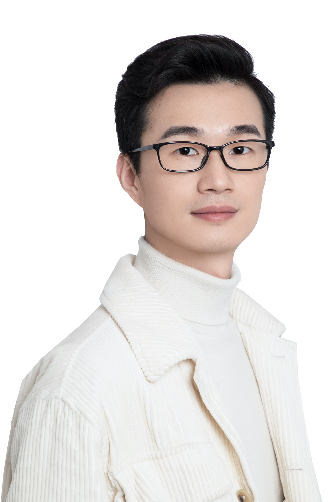
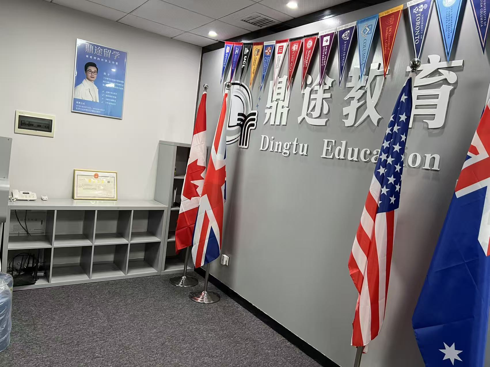

关于谢老师 · ABOUT VINCENT XIE
教育不是替孩子规划一条路，
而是帮助他们拥有方向。
鼎途教育由独立教育咨询顾问谢老师（Vincent Xie）创立，服务于关注长期成长的学生与家庭。我们相信，面对变化的世界，最重要的能力是理解自己、持续学习，并能为自己的选择负责。

鼎途谢老师 · FOUNDER & CONSULTANT
专业方法之外，
是一段长期陪伴。
我希望学生在申请过程中，不只是完成材料、获得录取，也逐渐能够理解自己、提出问题、做出选择，并承担选择带来的责任。
预约免费初谈 ↗独立教育咨询顾问 · INDEPENDENT CONSULTANT
Vincent Xie
谢老师
拥有 UCLA 教育咨询硕士证书及哈佛心理学硕士学习背景，长期从事国际教育、学生发展、大学申请与写作指导。
- 教育咨询
- UCLA 教育咨询硕士证书；荣誉毕业
- 教育研究
- 哈佛大学心理学硕士学习背景
- 专业经验
- 15 年教育及升学指导一线与管理经验
- 工作方式
- 独立顾问，一对一全程指导
部分经历 · SELECTED EXPERIENCE
- 2011–2015
留学网站英语编辑、申请全案顾问，以及国际学校升学与文书指导工作。
- 2017–2019
升学指导与文书主管，参与国际课程学校的升学课程开发。
- 2020
创建鼎途教育，建立校外本科咨询与学生培养服务体系。
- 2022–至今
完成 UCLA 教育咨询硕士证书，探索行为与认知心理在咨询中的实践，持续迭代鼎途课程与方法。

为什么选择独立顾问 · WHY INDEPENDENT
建议不为产品服务，
只为学生的选择服务。
独立咨询的价值，在于利益边界清晰、前后期指导连续，并能根据学生真实需要选择资源，而不是从既定产品反推需求。
了解独立教育顾问 →